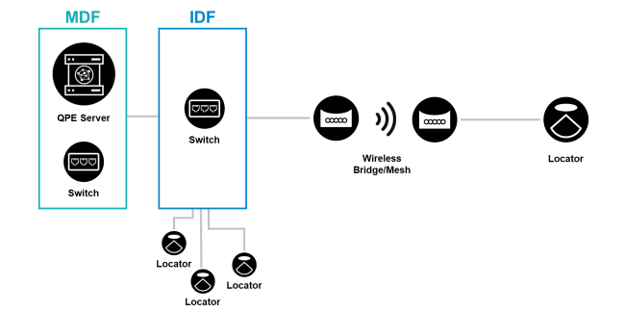

Third-party Connectivity
WiFi Bridges for Wireless Connectivity
In some use cases, one option to extend the connectivity of the system beyond the Ethernet cable coverage could be to use a WiFi mesh, bridge or a cellular uplink. For example, for outdoor deployments, where Locators cannot be mounted to the exteriors of existing buildings, it may be impractical and expensive to run Ethernet cables to structures where the outdoor Locators can be mounted.
An example of such a case could be a parking lot, which has existing lighting poles with electrical cabling for power where the Locators could be mounted, but no network cabling. In such cases, deploying new cabling for connectivity requires trenching and boring for each light pole, which could raise costs and the required effort levels so high that the project is no longer viable for some use cases. Instead, depending on the size of the outdoor area to be covered, a wireless infrastructure may be the only practical solution.
The image below shows an example of how a wireless bridge could be used to provide wireless connectivity for a Locator that cannot be connected to the network using Ethernet cables.

When considering a wireless uplink for connectivity, the following considerations should be taken into account:
-
Whether a WiFi or cellular uplink is best suited to the deployment
-
Availability of power for both the Locator and the wireless device to be used, either WiFi or cellular. Power can be provided by tapping into a local electrical sources, battery, solar panel or similar
-
Possible interference of WiFi uplink devices with an existing WiFi infrastructure
-
The cost of WiFi or cellular uplink devices, as well as providing power for the devices and Locators and other necessary items, e.g. PoE injectors, power converters, batteries, enclosures
-
Building characteristics that may play a part in interfering with a WiFi or cellular uplink
-
In the case of WiFi, distance limitations between the access point at the Locator and an access point linking to the core infrastructure
In cases where keeping wiring infrastructure costs to a minimum is the primary motivation for considering WiFi mesh as a means of providing Ethernet connectivity, it's good to note that the costs of providing and deploying a WiFi mesh will typically exceed the cost of wired connectivity. Wired connectivity provides PoE and Ethernet connectivity, negating the need for a WiFi access point at the Locator and providing electrical power to the Locator, which together far exceed the cost of Ethernet cabling in the vast majority of cases. As such, this solution should only be applied to cases where connectivity via Ethernet cables is truly not an option.
There are also hybrid situations where a partner could create an isolated zonal cabling infrastructure that is connected to the core through a wireless uplink. This could provide network connectivity for a number of Locators in an isolated area, or in an area where home run cabling is impossible or not cost-effective.
The key advantage of this type of solution is that you can extend the positioning system to areas where connectivity via Ethernet cabling is just not an option.
However, while interest in wireless deployments is often motivated by the logistical challenges and cost of installing cabling infrastructures in some large deployments, it's important to remember that even though wireless setups seem like viable options, they can incur a greater overall cost as well as cause other issues in an environment where an existing WiFi infrastructure already exists.
Private 4G/5G Networks for Connectivity
Another connectivity option for Quuppa systems is to use a private mobile network with a dedicated frequency license for the deployment area. Private mobile networks are fully managed by the user and so can be optimised for the needs of your use case, for example:
- Decide whether to keep all data local with a stand alone network or whether to connect the network to the Internet
- Select the devices that best suit your deployment as private networks use the same standards as commercial networks, making it possible to use the same devices that are available for commercial networks
- Optimise the system for very short (e.g. <1ms) network delays
- Dimension the mobile networks so that there is no risk of congestion
- Build coverage as needed (output power limits are high and required number of base stations is low)
To implement a private network, you will need a mobile core, base station(s) and a wireless router with a SIM card.
The key advantage of using a private mobile network with a licensed frequency are that you can avoid the air interface interference issues and have complete control over configuring the system to your needs. Meanwhile, the cost of running a private mobile network is similar to running WiFi networks and require the same skills set.
However, there is a cost related to frequency license and they are not available in every country to be used for private mobile networks. Wireless routers need a SIM card that is a private network specific.